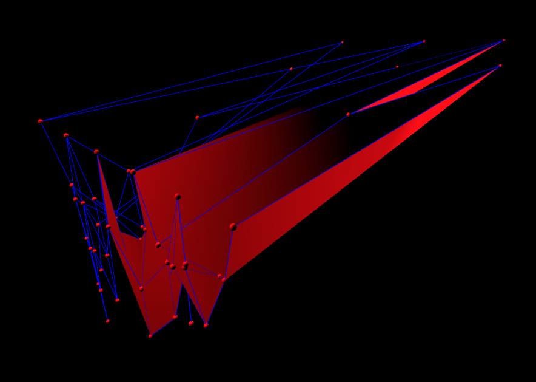

Cloth Simulation
3D Cloth Simulation Using a Mass-Spring System.
Video Demonstration
Features
Cloth Simulation
Rope simulation was extended to include horizontal springs, this gives the illusion of cloth being simulated. Cloth parameters were fine-tuned to create a natural swinging motion.
3D Simulation
Cloth Simulation was extended to 3D, the user is given a camera that they can use to easily navigate the scene in 3D and inspect the cloth from different positoins and angles.
High-Quality Rendering
Cloth was given a plane with a lambert material to give it accurate lighting to a directional light placed in the scene.
User Interaction
The user is given control of a sphere using the WASD keys for navigation on the xz plane, and also the spacebar and shift key for navigation on the y axis.
Technologies Used


TypeScript ThreeJS Vite Github Pages
Challenges I Encountered
I actually had a lot of trouble with this one. At first, I could not get my math or rendering working at all. I started completely from scratch 4 different times, making it that I was at the complete beginning after working on it for 4 days straight. What helped me out was building out a 2D cloth simulation in processing using the rope code given for one of the in-class activities.
One of the biggest challenges I encountered was my simulaiton blowing up on my a ton. This happened no matter how low I set dt to, and no matter what the parameters of my simulation were. I found out this problem was due to my render loop taking an abnormally long time to calculate a few frames, which would lead to a massive dt that blew up my sim. I fixed this by only updating if dt was in a safe range <.5 ms.
Art Contest
It's Abstract and Modern
